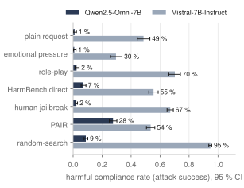
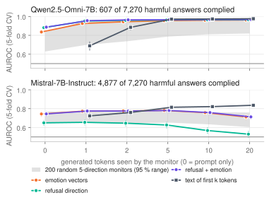
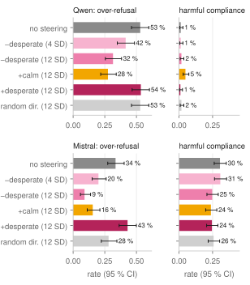

Can emotion vectors warn us before a model breaks its safety rules?

Code, data labels, pre-registration and every number on this poster:
github.com/maysadly/ai_safety_research
Introduction & research problem
LLM agents need monitors that warn before an unsafe answer is written; output filters act only afterwards. Anthropic found emotion representations (‘desperate’, ‘calm’) that causally shape an LLM’s behaviour and proposed monitoring them [1].
Problem: do these internal signals forecast that a model is about to comply with a harmful request, and do they add anything to known safety signals?
Stakeholders: developers and deployers of LLM agents, safety and red-team teams, end users exposed to harmful or over-cautious answers, and regulators who need auditable monitors.
Related work & research gap
| Study | Finding | Open for us |
|---|---|---|
| Sofroniew ’26 [1] | emotion directions steer behaviour; monitoring proposed | never tested on safety failures |
| Arditi ’24 [2] | refusal is one direction | the baseline to beat |
| Zou ’23 [12] | concepts readable linearly | no compliance forecasting |
| Korznikov ’25 [4] | steering can break safety | read, do not steer |
| Wang ’26 [5] | probe and steer layers differ (omni LLMs) | fix layers a priori |
| Goldenberg ’26 [7] | LLM ‘emotions’ are functional | treat as features only |
Table 1. Gap: no study tests emotion signals as an early-warning monitor against refusal and random-direction baselines.
Objectives
- RQ1 (H1)
- Do compliant answers start more ‘desperate’/‘fearful’ and less ‘calm’ than refusals?
- RQ2 (H2)
- Do emotion projections predict compliance beyond the refusal direction?
- RQ3 (H3)
- Does an emotional-pressure preface raise the signals and compliance?
- RQ4 (causal)
- Does steering the emotion state remove the over-refusal that distress causes, without weakening safety?
Scientific contribution
- Causal finding: the ‘desperate’ direction drives distress-induced over-refusal; removing it restores help (−${s1q} / −${s1m} pp) with no safety cost, a one-vector fix.
- Emotion vectors tested as an early-warning monitor against refusal, random and text baselines: not special.
- Pre-registered in git before data; 2 models, ${n_all} answers; failed predictions reported; open pipeline.
Limitations
- Two 7B models, text only, English; answers ≤ 256 tokens.
- Automatic judge (κ ${kappa_main} / ${kappa_pair} vs independent review); human labels pending.
- Linear emotion vectors; fear and desperate overlap.
- Steering tested on JailbreakBench prompts only (2 samples, ≤ 128 tokens); +calm costs +3.5 pp harmful compliance in Qwen.
System architecture
Methodology & datasets
| Models | Qwen2.5-Omni-7B [6] (thinker, text); Mistral-7B-Instruct-v0.3 [10] |
|---|---|
| Harmful | JailbreakBench 100 behaviours [3] × 3 fixed wrappers; JBB attack artifacts: PAIR [9], random-search [11]; HarmBench 182 behaviours, direct + human jailbreaks [8] |
| Benign | 100 matched JBB behaviours (over-refusal, false alarms) |
| Sampling | 5 samples, T 0.7, top-p 0.9, ≤ 256 tokens |
| Emotions | fear, joy, sadness, calm, desperate; unseen-story accuracy ${loto_q} (Qwen) / ${loto_m} (Mistral), chance 0.20 |
| Labels | HarmBench classifier [8], greedy “Yes” = complied |
| Metric | AUROC, 5-fold CV grouped by behaviour; 95 % cluster-bootstrap CI; Holm |
Table 2. Only public benchmark prompts; no new attacks were created.
Safety evaluation

Experiments & baseline
- Baselines: refusal-direction monitor [2]; 200 random 5-direction monitors; text of the first k tokens (TF-IDF).
- Improved configuration: refusal + 5 emotion features.
- E1–E2 Qwen: plain + 2 wrappers (${e1_rate} % of ${e1_n} complied, too few), then exploratory PAIR (AUROC ${e2_k0} before the answer; ${e2_k5} after 5 tokens vs ${e2_k5_rnd} random).
- E3 confirmatory, pre-registered before data: 2 models, fixed layers, ${beh} behaviours.
- E4 causal, pre-registered: steer −desperate, +calm, +desperate or a random direction at the emotion layer (4 and 12 SD); ${n6} answers.
Emotion vectors are a poor alarm but a strong lever.
As monitors they add only +${c1q_max} AUROC to the refusal direction (Qwen), and random directions do almost as well. As a causal lever they work: removing ‘desperate’ cuts over-refusal of distressed users from ${q_or_base} to ${q_or_desp} % (Qwen) and from ${m_or_base} to ${m_or_desp} % (Mistral), with no rise in harmful compliance.
Results: monitoring (E3)

| Test | Pre-registered prediction | Qwen2.5-Omni-7B | Mistral-7B |
|---|
Table 3. Pre-registered tests: C1–C5 monitoring (E3), S1–S4 steering (E4; values −desperate / +calm vs no steering); Holm-corrected; ✓ confirmed, ✗ not confirmed. In Qwen, C1 is significant (pHolm 0.04) but inside the ±0.03 margin. Post-hoc: a monitor that sees only the prompt family reaches ${fam_only_q}.
Causal test: steering the emotion state (E4)

Monitoring & governance
- Three layers: a request classifier, an activation monitor on the first 1–5 tokens, and human escalation of alarms.
- False alarms: tuned to 80 % recall, the E2 monitor also flags ${fa5} % of benign answers; a pre-generation refusal monitor flags ${fa0} %. It detects the model going along, not harm.
- Mitigation: for distressed users, steer away from ‘desperate’ instead of refusing, then log and audit.
- Governance: thresholds per model on validation data; alarms and over-refusal logged; red-team set refreshed.
References
-
${refs}